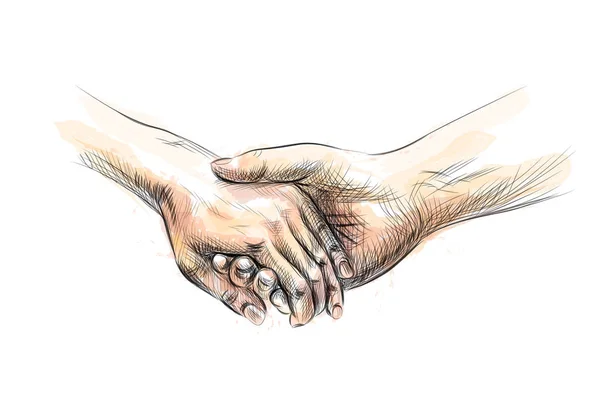

Por que falar sobre isso é importante?
O suicídio é uma questão de saúde pública que afeta milhões de pessoas. Falar sobre o tema com empatia pode salvar vidas. A prevenção começa com a conscientização e o apoio.
Mensagens de Esperança
A esperança é a luz na escuridão.

Pedir ajuda é um ato de coragem e força.

Há pessoas que se preocupam com você. Compartilhe seus sentimentos.
Como podemos ajudar?
- Estamos sempre disponíveis para ouvir sem julgamentos.
- Nós temos profissionais preparados na área da saúde mental, prontos para ajudar.
- Se estiver com problemas, busque ajuda mais próxima como o CVV (188).